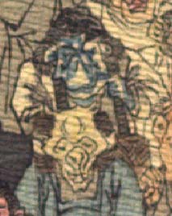

青い肌の鬼。頭に黒い頭巾状のものをかぶっている。顔は、真ん中を絞ったように皺が寄り、目は細く吊りあがっている。白い上着を身に着けている。肩から笈の帯らしいものを掛けている。
著作者：J.Dautremer／出典：親書誌：U426_nichibunken_0123：Le vieillard et les démons／日付：2006／資源識別子：U426_nichibunken_0123_0002_0005
Copyright (c)2010- International Research Center for Japanese Studies, Kyoto, Japan. All rights reserved.